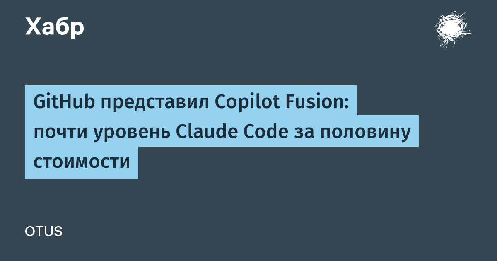

Разработчикам больше не нужно угадывать, какую модель подключить к задаче. Copilot Fusion оценивает, что требует работа — рассуждения, генерация кода, отладка или вызов инструментов, — и сама решает, исполнять её на одной модели или распределить между несколькими. Разработчик задаёт только уровень усилий, а подбор моделей берёт на себя система. Статус — уже общедоступный (general availability).
В индексе агентского кодинга Artificial Analysis Coding Agent Index топовый режим Fusion Max набрал результат в пределах двух баллов от Claude Opus 5.5 Max — при средней стоимости API примерно вдвое ниже и примерно на 40% меньшем времени на задачу. Именно это сравнение разобрали и пересказчики: The New Stack пишет, что Fusion «обгоняет связку с Claude Code по цене вдвое», Habr передал то же самое в заголовке «почти уровень Claude Code за половину стоимости».
Пакет анонсов вышел плотным: приложение GitHub Copilot для управления флотом агентов «от задачи до мержа», Copilot projects с параллельными сессиями агентов сразу в нескольких репозиториях, непрерывность сессии между телефоном, VS Code, CLI и вебом, а также Copilot automations, которые учатся по результатам и сами предлагают улучшения. Ревьюер Copilot code review Max показал лучший F1 по критичным дефектам на ReviewBench. Для клиентов GitHub Enterprise все функции Copilot теперь идут без отдельной подписки — оплата только за использованные ИИ-кредиты.
Под всё это GitHub достраивает железо: за год добавлено 4 млн CPU-ядер, 160 ПБ быстрых хранилищ и 50 Тбит/с сетевой ёмкости, продолжается переезд на мультирегиональный Azure — его обещают завершить в начале следующего года. Головной боли добавляет и рынок: по данным Gartner, лишь 3% компаний пока добились от ИИ обещанной экономии, так что ставка на «дешевле и быстрее при том же качестве» выглядит очень по адресу.
Маршрутизация моделей становится стандартным слоем агентской разработки: выигрывает не та модель, что умнее всех, а та система, что подешевле подбирает нужную. GitHub первой из крупных платформ вынесла это в продукт по умолчанию.